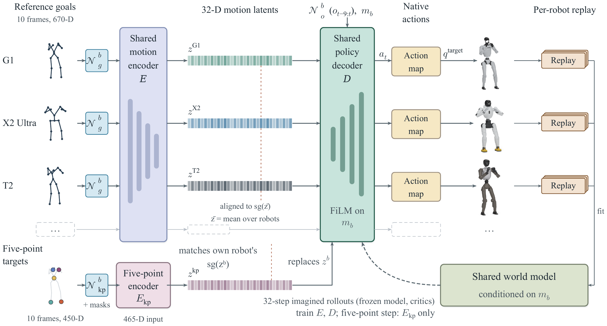
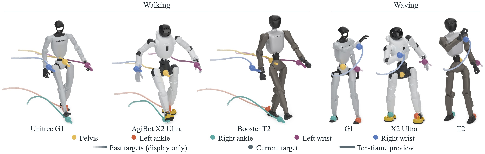
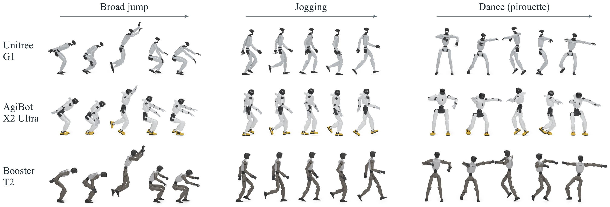

One World, One Model
See it in your browser
The shared policy runs live in your browser (about 90 MB on first load). Drag a robot to push it.
Method
MorphMimic builds on an independent reimplementation of SuperMimic, which trains a tracker by differentiating through short rollouts of a learned dynamics model. A canonical layout maps each robot's joints by kinematic function onto a common joint order and 14 tracked bodies, and a 125-value descriptor of actuation, geometry and mass conditions the shared networks. Normalization statistics, reference motions and replay data stay robot-specific.

Results
We compare the unified model with a specialist for each robot. Both train for 40,000 iterations with 4096 environments per robot. To test whether training on all three bodies matters, we also run the G1 specialist on the X2 Ultra and T2 without retraining. Each of the 128,786 common clips runs once from its first frame under the deterministic policy. A shared model matches a specialist when its mean normalized return is within 0.02, a tolerance set before the evaluation.
| Interface | Configuration | G1 | X2 Ultra | T2 | |||
|---|---|---|---|---|---|---|---|
| Survival (%) ↑ | Mean return ↑ | Survival (%) ↑ | Mean return ↑ | Survival (%) ↑ | Mean return ↑ | ||
| Full motion | Specialist | 99.797 | 0.9306 | 99.818 | 0.9253 | 99.860 | 0.9448 |
| Unified | 99.747 | 0.9358 | 99.891 | 0.9304 | 99.886 | 0.9398 | |
| G1 only, target params | – | – | 7.7 | 0.213 | 1.9 | 0.048 | |
| G1 only, G1 params | – | – | 87.7 | 0.724 | 1.6 | 0.042 | |
| Five-point | Specialist | 99.849 | 0.8807 | 99.841 | 0.8689 | 99.857 | 0.9014 |
| Unified | 99.729 | 0.8626 | 99.880 | 0.8774 | 99.852 | 0.8890 | |
| G1 only, target params | – | – | 17.2 | 0.264 | 2.6 | 0.047 | |
| G1 only, G1 params | – | – | 76.8 | 0.401 | 2.1 | 0.027 | |
Table I. Specialist, unified and single-G1 transfer policies on the 128,786-clip common set. The G1-only rows run the G1 specialist on the X2 Ultra and T2 with the target robot's action parameters or with the G1's. Survival is the fraction of clips that reach the final frame without early termination. Higher is better (↑); the better specialist or unified value in each block is in bold.
The unified model's mean return is within 0.02 of the specialist's on all six robot and interface pairs. The largest gap is 0.018, on G1 five-point tracking. Survival holds up too: the unified model leads on both X2 interfaces and on T2 full-motion tracking, and is within 0.12 percentage points of the specialist on the other three. The shared-world-model and shared-policy ablations in the paper's appendix also stay within 0.02. The unified run uses 16.3 GPU-hours, against 13.9 for the three specialists together, and gives one set of weights for all three robots.
A policy trained only on the G1 does not carry over. With the target robot's action scale and default pose, the G1 specialist fails on both the X2 and the T2. With the G1's own parameters it survives 87.7% of X2 full-motion clips and 76.8% of five-point clips, but stays below 2.1% on the T2 in every setting. Part of the T2 failure comes from its trunk-mounted IMU, a sensing frame the G1 policy never saw. Trained on all three bodies, the unified model reaches 99.9% survival on both.
Across all sharing configurations, five-point commands lower mean return by 0.04 to 0.07 on each robot.


Ten clips in simulation
The G1, X2 Ultra and T2 (left to right) track each clip through the full-motion interface. Simulated in MuJoCo with unified_v2 at iteration 76,000. The results above are the paper's, at 40,000 iterations.
Walk
Ballet: pas de bourrée
Ballet: turns
Street: shuffle
Street: hip hop
Jive
Macarena
Country line dance
Dance routine
Robot dance
Hardware
We run the shared policy from Table I, trained for 40,000 iterations in simulation, directly on a physical Unitree G1, with feedback from its pelvis IMU and 29 joint encoders. Through the full joint-space motion interface, the G1 dances, walks and follows an operator who wears a PICO headset, two hand controllers and two ankle trackers.
Unitree G1 hardware: upper-body motion (full-motion interface)
Unitree G1 hardware: walking (full-motion interface)
Unitree G1 hardware: teleoperation (full-motion interface)
AgiBot X2 Ultra: hardware pending Booster T2: hardware pending
BibTeX
@misc{yang2026morphmimic,
title = {{MorphMimic}: Morphology-Conditioned World Model and Policy Sharing Across Humanoids},
author = {Yang, Lizhi and Xie, Fengze and Wang, Yuyang and Gan, Lu and Yue, Yisong and Ames, Aaron D.},
year = {2026},
note = {Technical report},
howpublished = {\url{https://lzyang2000.github.io/morphmimic/}}
}